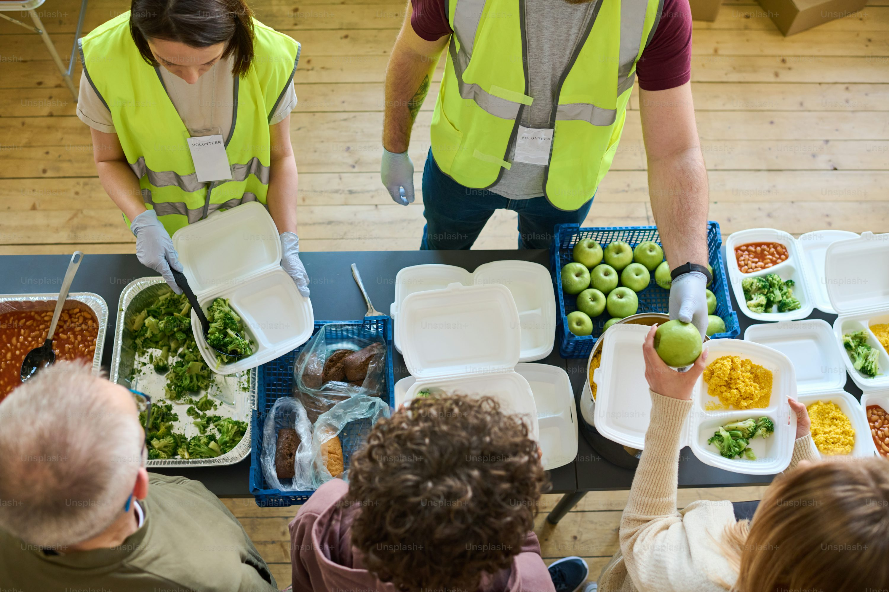
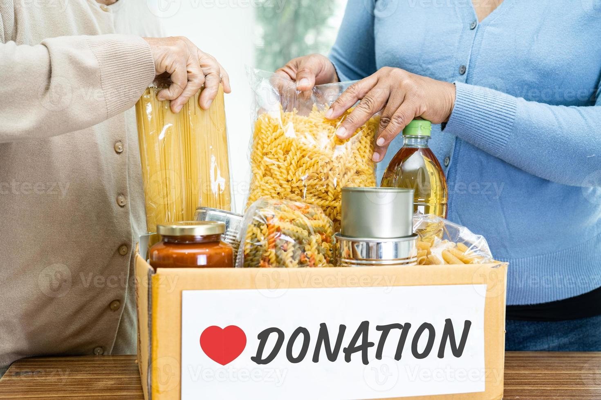

Foods spots Near You
See More

DONOR Name 1
2.5km
DONOR Name 2
2.5km

DONOR Name 3
2.5km

DONOR Name 4
2.5km
Community
View FeedFAQs
WHO WILL DONATE FOOD?
Whether volunteers will deliver the food to our location at the scheduled time.
Can we post multiple food requests?
Yes, you can post multiple food requests. Simply create a food request post when you require food.